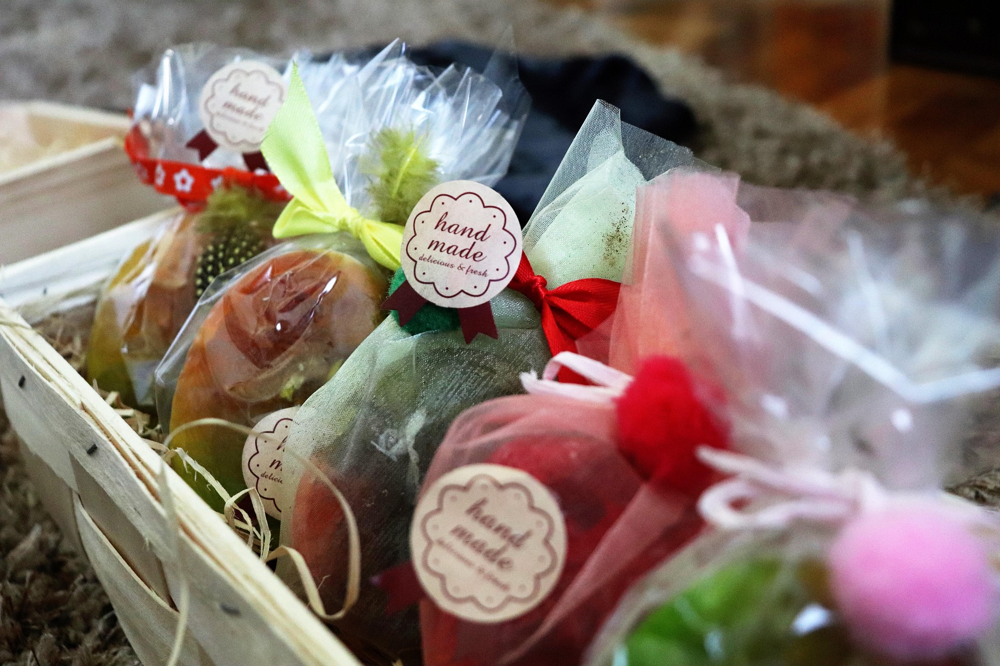
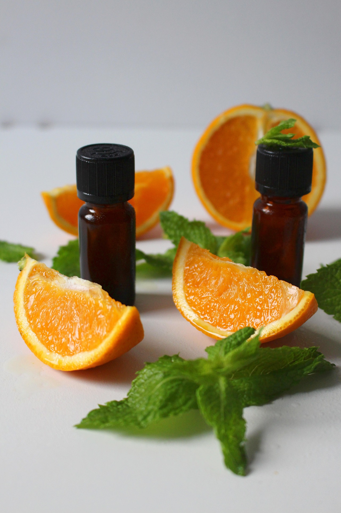
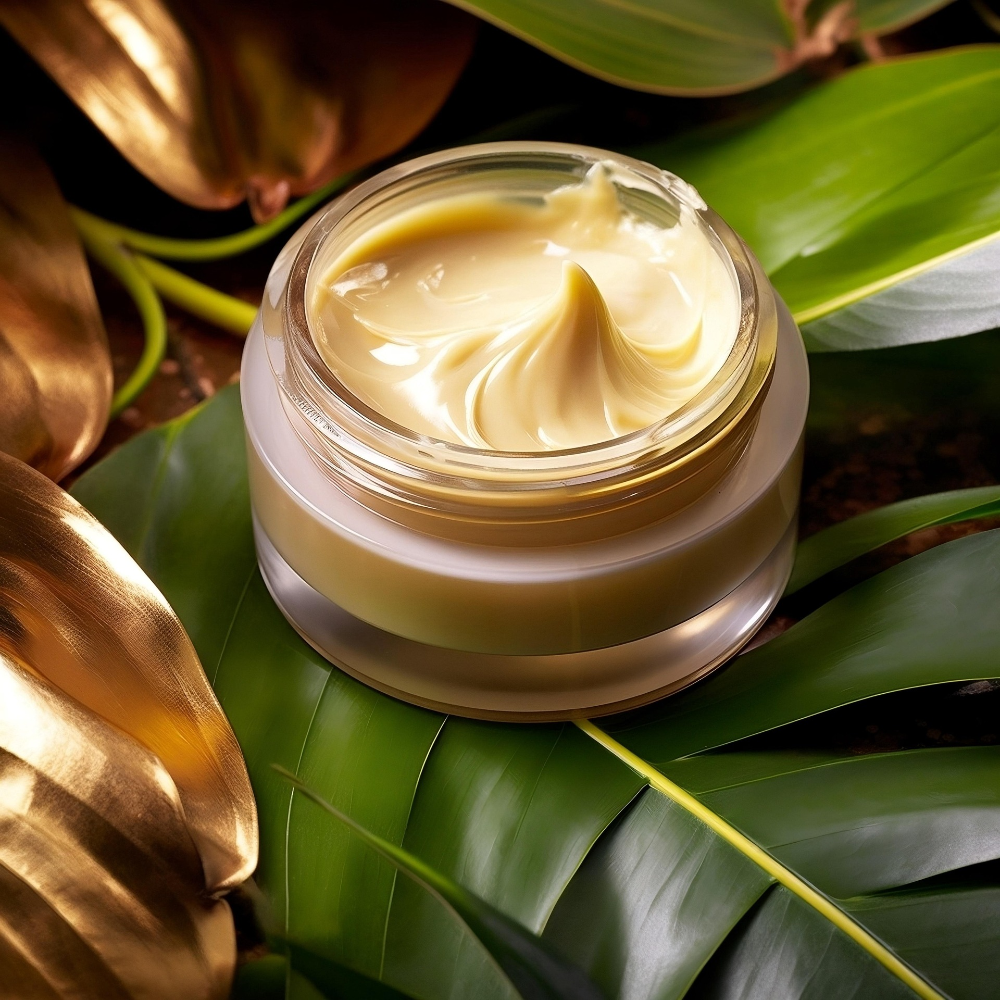

Sabonetes Artesanais
Texturas cremosas com base vegetal e óleos essenciais para limpar sem ressecar.

Linha assinada pela biomédica
Cada item é formulado com estudos clínicos, testes de estabilidade e ingredientes naturais selecionados para a pele brasileira.
Sabonetes, óleos e cosméticos desenvolvidos com biomédica responsável em conjunto com profissionais de laboratório. As fórmulas respeitam peles sensíveis e estão alinhadas com práticas sustentáveis.

Texturas cremosas com base vegetal e óleos essenciais para limpar sem ressecar.
Texturas cremosas com base vegetal e óleos essenciais para limpar sem ressecar.
Texturas cremosas com base vegetal e óleos essenciais para limpar sem ressecar.
Texturas cremosas com base vegetal e óleos essenciais para limpar sem ressecar.
Combinações de aromas relaxantes que elevam o ambiente e estimulam os sentidos.

Séruns e cremes com ativos botânicos que hidratam, protegem e suavizam a pele.

Protocolos guiados para incorporar em rotinas noturnas ou pós procedimentos estéticos.